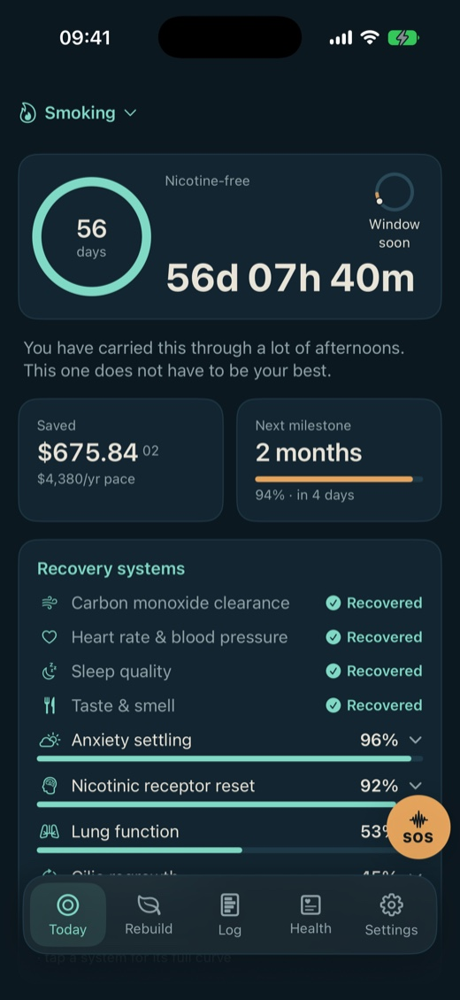
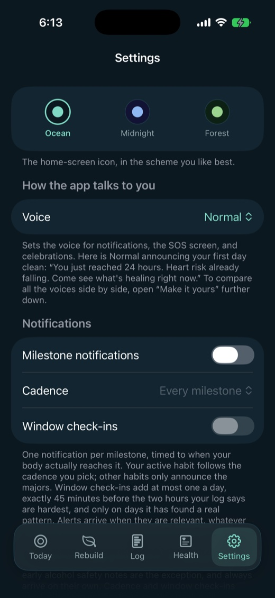
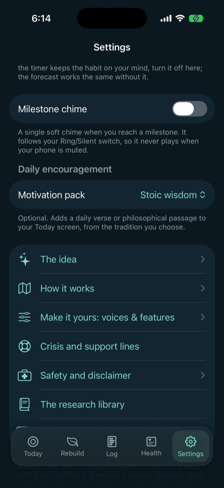

Observation, not willpower.
Your cravings arrive at hours. Hours can be counted.
So the app counts yours, off the days you actually lived, and only then hands you something to do about them. For smoking, vaping, alcohol, cannabis or caffeine.

Your clean time, and the two hours your own log named. Real screens, on a seeded demo log rather than a person's.
Five habits, five different withdrawals.
Written five times over, because caffeine's clock has nothing in common with alcohol's.
Smoking, vaping, alcohol, cannabis and caffeine each get their own timeline: 109 milestones between them, 33 for smoking down to 15 for caffeine. Nothing is shared except the two nicotine rails, which say where they lean on cigarette research. Quit two things at once and each keeps its own clock, its own timeline and its own colour.
Nicotine leaves in days while the receptors take weeks, and it leaves smoking and vaping differently: smoking spends its first day clearing carbon monoxide that vaping never put there. Cannabis takes sleep and appetite, and hands them back over the first ten days. Caffeine is a headache with a deadline. Alcohol is the one the app treats as medical, and it says so on its own path rather than on this page.

Act one
Seeing
Eight sections, and not one of them tells you what to do. This half is only the reading.
Your habit has a shape.
Two hours out of your own log, and five separate tests before the app will name them.
The window is two hours of your own day, counted off days you lived rather than guessed from a type. It clears five clauses before it speaks: four comparable days occupied, a statistical floor at 0.50, a recurrence lift of half again over your own base rate, a scan-corrected tail under 0.05, and a previous reading that already named the same hour. For some logs it never clears, and the app says nothing rather than invent one.
The everyday reading is counted across your last thirty days. A pattern that only shows on one weekday is counted across your last eight of that weekday, so it takes longer to earn: about a month before it can say anything about Fridays.
The dial has five states and five words: Outside it, Window soon, In window, Held, and Day N of 3 after a slip. This is the app's own line, unchanged: there is no score in it, no colour scale, and no red.
If you have a second real peak it gets its own scan, with everything within four hours of the first removed, and it has to clear all five clauses on its own. Almost nobody has two.
The window and the dial are Premium. The counter, the day-level timeline and every SOS tool are not.
How the window is found
- Every craving you log lands at the hour it happened.
- Until the pattern clears five separate tests, the app says nothing at all.
- 7 of your last 9 days had a craving between 8 PM and 10 PM.
A seeded demo log, one that happens to peak in the early evening. Yours will name different hours, or none at all.
You have never seen the whole day.
You know roughly when it gets bad. Here are all twenty-four hours of it, weighted by how hard each craving hit rather than by how many there were.
The window is a summary of this. Show the surface it summarises and the two hours stop reading like a horoscope: they are the tallest part of a shape you can see the rest of.
- 24 barsYour last thirty days, severity-weighted, drawn once four cravings are logged.
- Your heaviest weekdayNeeds eight logged cravings, and the leading day has to carry 30 percent of the week's load before it appears at all.
- This week, last weekTwo counts side by side, and the older number stays printed beside the newer one.
- The gapsWhether the time between your cravings is widening, tightening or holding. A 28-day span split in two, four gaps needed in each half, and a 25 percent shift before a direction is named.
The hour you wrote it down is not the hour it happened, so the log asks. A weekly catch-up logger once deposited a whole week at one hour and the app named that hour with total confidence, having been handed a filing habit rather than a pattern. Two chips and a bounded picker exist because of that.
Ranked by what it costs, not how often.
And the one number that tells you whether this is getting easier.
The trigger chart is total severity load rather than counts, so a longer bar can never carry a smaller number. A few crushing triggers outrank many mild ones. It draws at most eight rows and says how many it left out.
Beside it, craving strength: a 1 to 5 rating, a weekly average printed as "N.N of 5" with last week beside it, a thirty-day line once three rated days exist, and four trend words across three weeks. It also names which two of your triggers keep arriving together, and it needs two co-occurrences before it will call that a pattern. The app's own sentence: Plan for the pair, not just each one.
The strength trend is the most useful number on this page for anybody deciding whether to keep going, and it is the one no previous version of this site mentioned.

You flagged it. Then your log said otherwise.
One label change, one gate, and it is the whole difference between a profile and an observation.
Until your log holds four cravings in the window, the card reads You flagged: Stress, under the heading "The triggers you flagged". At the fourth it reads Hits you hardest: Stress, under "The triggers hitting you hardest". Nothing else on the card changed. What changed is who is speaking: you were, and now your record is.
Rank comes from the trigger order and never from the card order, so a heavy trigger with no play beside it cannot promote the next one into a claim your data does not make.
Every other app asks you a set of questions at setup and then tells you about yourself for the next year. This one treats what you told it as a placeholder and replaces it the moment it has something better.
You already have a before.
Fourteen days you did not know you were recording.
Five measures chart themselves against your own average from the fourteen days before your quit date: resting heart rate, heart rate variability, cardio fitness, respiratory rate and blood oxygen. What published research expects sits under your own chart with its citations, then the chart shows what actually happened to you, which is not always the same thing and is never edited to agree.
All five come off a wearable, and a watch writes about one average a day, so the first point can take until tomorrow morning. Under five pre-quit days, no dashed baseline is drawn and the card says why rather than drawing a line it cannot support.
The app keeps no copy. Every visit reads Apple Health fresh and stores none of it: no series on your phone, none in the iCloud backup, nothing to leak. The five cards are Premium.

A demonstration chart. The five cards read Apple Health live and store no series, so there was nothing to photograph without seeding readings. The chart, the baseline line and the citation are real; the numbers are not somebody's.

The structure is the point: what the research expects sits under the chart, with its source, so the two can be read against each other.
Your own five cards will show your own numbers, whatever they turn out to be, including the ones that disagree with the research printed beside them.
There is no improved you at the end of this.
Only you, uninterrupted, on a road that is already dated.
The app's own words, at the top of the Health tab.
Nothing is being added. Something is being removed. It only sets down a weight you had stopped noticing you carried, and what remains was always what you were.
The flatness of week one is not a personality. It is a withdrawal state, and it has a duration: 109 milestones from twenty minutes to fifteen years, written separately for each of the five habits. Twenty-eight recovery curves bend their day axis by how heavily you used, while the labelled times deliberately do not, because a half-life is not a preference, and a note on screen says so.
The hour-by-hour timeline and the curves are Premium. The day-level milestones are free.
Every hour of it, what to do about it, and the evidence for each one
Open a milestone and it holds what is healing, and what you might feel today. Through the acute window it holds a third thing: what actually helps, at that hour, not in general. That is 67 of the 109 stages, and they are the 67 that need it. Cannabis and caffeine carry a move at every stage they have, out to a year. Smoking, vaping and alcohol carry one at every hour through the first three days, then stop, because by the second week there is nothing left to get through.
Twenty minutes in, the smoking timeline says this, and it is the app's own wording: You feel fine now, so use it. Clear them out first: the pack, the spare in the car, the lighters, the ashtrays. Then it tells you to decide, while you are calm, exactly what you will do when the first craving lands.
At two hours it says nicotine's half-life is about two hours, so half of it is already gone, and the studies that the claim rests on are printed right under it. All 54 sources are listed inside the app with working links, and a catalogue move with no study behind it says so on its own page.
![The recovery timeline for the first day, with the twenty-minute
milestone open and titled The healing begins. Inside it: What's
healing, heart rate and blood pressure begin dropping back
toward your true baseline. What you might feel, you feel fine,
still riding the decision. What helps now, a paragraph telling
you to clear out the pack, the spare in the car, the lighters
and the ashtrays while you still feel fine, and to decide now
what you will do when the first craving lands. A line beneath
reads Evidence 1, 2, 21. Collapsed below it: one hour,
circulation waking up; two hours, nicotine halved; four hours,
three-quarters gone.](shots/timeline.jpg)
Silence is a reading.
Four different refusals, each one worded, because a hidden blank once told a well-logged reader the wrong reason.
"Needs 4+ logs" and "no single window yet" are two different facts about your record, and one blank used to cover both. "Not enough pre-quit days for a baseline, needs 5." The Patterns card renders no card at all rather than a placeholder row. A failed Health read shows as an error with a retry, never as the friendly empty state.
This is the app's own sentence, and it is the closest thing this product has to a creed: Silence here means the app has nothing honest to say, not that you are doing badly.
Four explainers fire the first time a feature is actually on screen, and the last paragraph of each one is an honesty note about what the feature is not. A missing line is the app declining to guess.
Everything above is a reading you can check. What it costs is further down this page.
Nothing leaves.
No account, because there is nothing to sign in to.
Your habits and quit dates, your craving log, your slips, your savings, your settings and anything read from Apple Health live on your phone. Nothing is ever written back to Health.
Six things can leave, and each one is a thing you do on purpose: an iCloud backup, into your own private database that we cannot read; a post to the community board, under an anonymous identifier that is never your name; a vote on somebody else's post, stored under that same identifier so a tap can be taken back; a report, if you flag a post for review; a feedback message, if you write one; and a support conversation, if you start one, addressed by a random ID that is never your name. That is the whole list.
Reading the board sends nothing and needs no account. Nothing is written unless you post, vote, report, or write to us.
This page is part of the same promise. It loads no fonts, no executable script and no trackers, and sets no cookies. Its own content policy tells the browser to refuse them, so it is enforced rather than promised. Read the privacy policy, which is short and in plain words.
Correction that skips the watching is just willpower, and willpower is what you already tried four times.
Everything above this line is the reading. Everything below it acts on what you saw. The order is the product.
Act two
Correcting the course
Eight sections, and not one of them asks you to want it more.
The move was decided while you were calm.
Ten plays, one per trigger, and a refusal where the app has no honest answer.
A decision made in advance is the exact opposite of effort made in the moment. Ten plays, one for each library trigger, each with a headline, the advice, and citations into four studies. The app's own line for the hardest one: Seeing someone use is one of the strongest cues there is, and the honest fix is mostly avoidance, not willpower. That was written into the product long before it was a campaign line.
For a trigger you named yourself there is one general if-then play, because the app will not pretend to know your private trigger. Two deliberate silences: "Other" gets nothing, because a bucket with no name has nothing to plan for, and the Drinking play is withheld from an alcohol quit, so advice about capping your drinking cannot return through the side door.
Three hours before it opens.
And the page says which warnings were measured about you and which were written for your substance.
Measured, from your log. The window card arms three hours early with up to five separately earned lines, names the trigger that rides along, and its What helps button opens the matching play without leaving Today. The check-in push is separate and lands about 45 minutes out: opt in, off by default, at most one per occurrence and one per habit per day, reading the same gated list the screen reads. It arrives with the play and not just the warning. This is the app's own line, unchanged: A walk, some water, or the SOS breath is enough to get through it.
Staged, from your clock and your substance. 67 of the 109 milestones carry a move under "What helps now", and one of six coping cards appears when the stage you are in names that symptom.
Those are two different kinds of claim and the app never blends them. One is about you. The other is about the drug.

The wave, timed.
One five-minute clock, shared by every tool, and no button that says it passed.
A craving crests and fades in a few minutes whether or not you fight it. The whole job is to still be there afterwards. Two routes, in the app's own headings: turn toward the craving and let the wave pass, or fill your mind with a game until it breaks. A breath pacer, a body scan, a grounding count, a passage, and two games for when thinking is not on the table.
One 300-second clock anchored to wall time and shared across every tool, so switching from breathing to a game does not restart the wave, and backgrounding cannot pause it. At zero it says Outlasted. Once five timed rides exist inside 56 days it quotes the median of your last ten, which is almost always shorter than they feel. Most cravings pass within a few minutes, a stubborn one can run longer, and that is still normal.
During the body scan, one of the prompts reads: You're the one watching. It's the one passing. That has been in the product since before there was a word for what this page is about.
Every one of these is free, permanently. So are the four crisis lines, dialable at the foot of this page.
The worst ten minutes of your week are not a sales moment.

The void has four names.
Reward, connection, meaning, competence. The habit was faking all four, and 71 moves rebuild the real thing.
Substances counterfeit natural reward, which is why early abstinence leaves pleasure blunted, and why the answer is not distraction. The five catalogue sections are not filter labels. They are a map of what the habit was standing in for, and the fifth appears only if you turn a pack on.
The weeks between cravings are the ones that decide it, and they are the ones nothing else helps with. Every one of the 71 moves states two plain facts before you commit: how long it takes, and how exposed it feels. The scale rates the move and never you, so a two-hour solo hike is Quiet and a thirty-second phone call can be Real nerve. Forty-six cite a study. Twenty-five say on their own page that they carry none.
One ladder is the whole idea made literal: sit with yourself for ten minutes, then twenty once ten is done, then an hour. Its own obstacle note reads That restlessness is the exercise, not a sign to stop.
The full catalogue is Premium. With every faith pack off you keep 63 of the 71.
Two ways to keep going, and neither resets
Challenges you set yourself, and a savings tin that counts what you have not spent. A slip restarts the clock and neither of them resets. The tin's own paragraph says why: your dream should never pay for one hard night, so the tin just keeps filling.
Wrist, Home Screen, Lock Screen
A Watch app that logs a craving in one tap, widgets in five sizes, and a Live Activity that counts the current run.
Yours to take
Export everything to a spreadsheet from Settings, whenever you like. Delete everything from the same screen, including the backup and anything you posted.

Your reason, in your words.
One line you wrote at setup, handed back at the minute you are most likely to have forgotten it.
One free-text line, captured at setup and editable later, quoted verbatim in a serif on the SOS hub and at celebrations, under a heading the app wrote for it: "A memo from past you, who saw this coming." Name a goal and matching recovery systems move to the front of Today. Nothing is added or removed. Only the order changes.
Same event, same evidence, three voices: Normal, Cheeky, Strict coach. No voice is allowed to claim more than the quiet one, and the count underneath is identical.

Three real strings for the same moment: "Your hard hour is coming", "Incoming: your brain's favorite hour", "Window opens soon. Get ahead of it."

Fifty-four passages across four packs, off by default: Stoic wisdom, Christian, Islamic and Jewish scripture. One picker, one tradition, and its first row is Off.
They are free, permanently, and no part of the product is held behind a belief. With every pack off you keep the window, the timeline, the health cards, the SOS tools and 63 of the 71 catalogue moves. Turning one on adds a daily passage, a fifth SOS tool that reads you a short story, and the 8 moves in the Spirit section. Nothing is taken away for saying no.
Reading needs no account.
The moves other people found, and the one instrument here that gets you information you cannot get on your own.
Somebody posts a move that worked for them. A person reads it before it appears anywhere. Then the board votes, and the most-backed get reviewed again and built into everybody's catalogue, badged community, uncited by design, with "Where it came from" in place of a science section.
Reading takes no account at all. Posting and voting need iCloud, which reaches the board as a salted hash and never your name. Report and Block sit on every post and survive promotion, and blocking someone stays on your phone.
This is the app's own fourth beat, and it is the turn the whole product makes: Go far enough inward, and you find you're not alone. Knowing yourself and reaching your people aren't two paths. They're one.
Only the clock restarts.
The run you just finished stays on your record. The tin keeps every dollar.
A counter that resets to zero has told you the last forty days did not happen. They happened. The button says what it does: Restart my clock, keep my history. Undo is on the very next screen.
Two chips, Just now or Earlier, and a picker bounded by your quit date and now. The re-quit sheet names the attempt, says whether the run you just closed was your longest, quotes your best, hands you the play for the trigger on your most recent craving, and prints the tin balance that survived. Your timeline keeps every run you have made, and the lessons stay in the log where the next window can use them.
Then 72 hours in which the dial names no hour and the app makes no measured claim at all, because one slip cannot rank anything. Nobody is scored and nobody is scolded. Nothing here is a penalty.
No move here is ever scored against your log.
The app learns which hours and which trigger are yours, and points a general library at them. It does not learn which moves work for you.
There is no field for whether a move helped. A logged craving stores a date, its triggers, an intensity and an optional note, and nothing about what the craving was for. Nothing in the code joins a completed move to a craving, a slip or a ride, and the done count is a bare sum of times you did something.
The catalogue is not filtered by substance at any point: every habit gets the whole library, and the only personalisation is order, driven by a goal you declared rather than a result anybody measured. And 42 of the 109 milestones carry no move at all.
All of that is true and none of it is on any competitor's page, which is rather the point. An app that will tell you what it cannot do has earned the parts where it says what it can.
The floor is free.
Everything you reach for on a bad night costs nothing, permanently.
Not a trial, not a teaser. The counter, every SOS tool, the day-level timeline and the crisis lines are free because that is where they belong, and they stay free whether or not you ever pay for anything.
Free, no matter what
- Your clean-time counter and the day-level milestone timeline
- Every SOS craving tool, and the crisis lines
- All four faith and philosophy packs
- The full export, and delete everything
Premium
- Your craving window: the two hours, the dial, and the heads-up before they open
- The hour-by-hour timeline, with the studies under each milestone
- Every recovery curve, and your five Health cards
- The full Rebuild catalogue
$39.99 a year, which is 77 cents a week and 67 percent less than paying monthly. $9.99 a month, cancel any month. $99.99 once, and nothing renews.
Subscriptions renew until you cancel, in your Apple account settings.
If your log never clears the bar, no window ever appears, and it is not being withheld from you: it does not exist. Premium is still the hour-by-hour timeline, the recovery curves, your Health cards and the full catalogue. The window is the one part the app will not fake to look like it is working.
The split above is decided and is not yet enforced in a shipping build. When it is, this line goes.
Some moments are not craving moments.
Four numbers, one tap each, free permanently.
In the US: call 988 for the Suicide and Crisis Lifeline, or text 988 if talking is not on the table. 1-800-662-4357 is the SAMHSA National Helpline, free, confidential and open every day. 1-800-784-8669 is 1-800-QUIT-NOW, for the quit itself. If someone is in immediate danger, call 911.
Outside the US, your local emergency number works the same way, and findahelpline.com lists crisis lines by country. That is the same link the app opens, and it is the only address on this page that points anywhere but here.
If you drink heavily every day, do not stop suddenly: a supervised taper is the safe route, so talk to a doctor first. The app's own wording, unchanged: Confusion, seeing or hearing things that are not there, fever, bad shaking, or a seizure means 911, immediately.
A person answers.
One address, and no ticket number.
Questions, bugs, or anything the app got wrong about you: write to info@quitforecast.com and the person who built it will answer.
QuitForecast is not a medical device and does not diagnose or treat anything. It holds no advice your own doctor should not overrule.